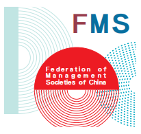

Kristy is an art director living in New York.

FMS管理科学期刊列表
期刊评级指南宗旨
本指南旨在xxxxxxxxxxxxxxxxxxxxxxxxxxxxxxxxxxxxxxxxxxxx xxxxxxxxxxxxxxxxxxxxxxxxxxxxxxxxxxxxxxxxxxxxxxxxxxxxxxxx xxxxxxxxxxxxxxxxxxxxxxxxxxxxxxxxxxxxxxxxxxxxxxxxxxxxx
